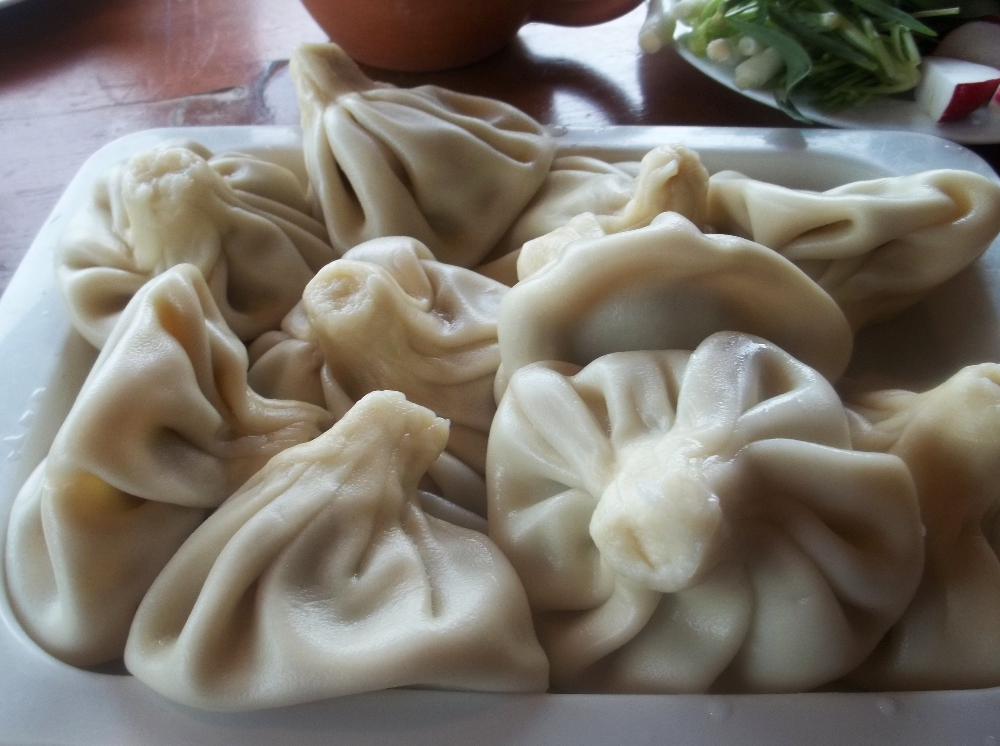

Khinkali

Description
Khinkali is a very popular Georgian dumpling made of twisted knobs of dough, stuffed with meat and spices. It is considered to be one of the national dishes of Georgia.
Ingredients
- Flour
- Eggs
- Ground beef & pork mix
- Salt
- Red pepper
- Ground caraway seed
- Onions
Steps
- Add 1.1 kilo of flour to a mixing bowl. Make a depression in the middle of the flour and add the eggs.
- Add 450 ml of warm water.
- Mix the ingredients from the middle of the bowl until all of the flour is mixed.
- The dough should be formed into a ball.
- Divide the dough into two pieces.
- Sprinkle a work surface and one of the balls of dough with flour and knead (very firmly) and fold the dough.
- Continue kneading and folding until the dough is very firm.
- Roll out the dough until it is about 1/3 of an inch thick.
- Cut out circles of about 2.5 inches in diameter with a drinking glass.
- Use a rolling pin to roll each circle into a thin eight inch round. These rounds will be filled with a meat and spice mixture to make khinkali.
- Add the meat, spices, 2 finely chopped onions (optional – we didn’t use onions) and salt to a mixing bowl.
- Mix the ingredients by hand and then add 25 ml of water and squash and squash the mixture. Repeat this process 20 times until you have mixed at least 500 ml of water with the meat. This will ensure that your khinkali have lots of ‘juice’.
- The meat should look like this at the end of the process.
- Take one round of dough from your pile of rounds.
- Add 1 heaped tbs of the meat mixture to the center of the round.
- Use your thumbs and index fingers to make an accordion type fold all around the outside.
- Roll the nubbin of the dumpling between your finger and thumb and pinch off extra dough. The khinkali should look like this.
- Put each khinkali on a board or work surface that has been dusted with flour.
- Carefully place the dumplings into a deep pan of boiling salty water, about 10-15 at a time (depending on the size of your pan).
- Boil for 12 to 14 minutes. If the dough has been made properly the dumplings will not burst.
- Khinkali are served hot with no garnish other than black pepper.